Reviewed: 23.03.2026
This asset shows how to update the network posture of a standby environment during an FSDR Drill. It can be used as an example and an implementation template whenever it is required to insulate an environment during a drill.
This asset can be used as boilerplate to implement the solution in any applicable environment. It provides:
What is presented here is just an example of a possible solution and its implementation. It has been tested for a specific use-case in a specific environment and it should be tested extensively before using it in a production environment. Please note that. all OCIDs and environment-specific identifiers in this guide are masked placeholders for demonstration purposes only.
Full Stack Disaster Recovery (FSDR) Drill feature allows to test the DR without affecting the primary system. The feature works by starting up the workload in the standby region as a copy of the primary system. To make a simple example let's assume having a three-tier workload with
When starting the drill (Start Drill Plan) FSDR executes the following actions:
This way the primary is not affected because:
When performing a FSDR Drill one possible problem is triggering external side effects that are not easy to rollback. For example, during the Drill, our application can call an external system to perform some operations. Another possible example is generating documents and sending them to external recipients. Creating those documents might be easy to roll back but explaining to the recipients to just ignore them might not be. Normally, we also don't want for the drill workload in the standby to be able to reach the primary, for example, using a Remote Peering Connection between VCN.
To showcase how to solve the problem previously described, we consider a simple scenario with a three tiers workload and an Active Directory replication between the primary and the standby region. AD provides DHCP and DNS services to the VMs in scope. While for Cross-Region Block Storage Replication and Autonomous DataGuard the VCNs don't need to be connected, the AD Replication is done by its own mechanism and requires network connectivity between the two ADs.
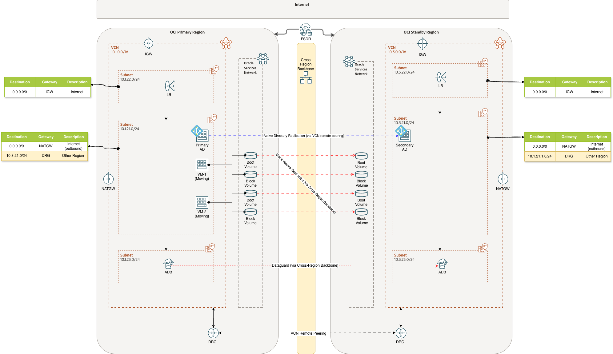
As shown here, when the system in the normal status the network in both regions have the following route rules:
During the FSDR Drill we want to remove those rules from the Standby subnets. When the Drill is completed we want to put those rules back. To accomplish that we need to update the autogenerated Start Drill and Stop Drill FSDR plans with custom steps and, since we don't want to execute anything, on any compute instance we will use OCI Functions. In this specific example we will focus on removing the rule no. 3 because we want for the Standby AD to take over the services in the drill workload, that said the solution is generic and can be used to remove and add any number of route rules.
The pillars of the solution are the following:
To implement the solution we need to create the two functions and enable them for the networking update in the compartment. The solution can be implemented from a PC or Mac or directly for OCI Cloud Shell, locally we will need to setup the software (OCI Cli, fn Cli, docker) and the OCI profile, directly on Cloud Shell everything will be available. Since the local approach is more generic, we will showcase that one.
We put everything in an existing OCI Compartment called "Sandbox". First we create the dynamic group for the functions defined there (we need to do it in the home region which, in this case, is Frankfurt that is also the Standby region). The OCI Cli command to do that is the following:
# We need to do it in the home region
oci --region eu-frankfurt-1 iam dynamic-group create --name Sandbox-Functions-Grp \
--description "All functions in compartment Sandbox" \
--matching-rule "All {resource.type = 'functions', resource.compartment.name = 'Sandbox'}"
Then we have to create the policy that allows the dynamic group to manipulate the network components in the same compartment.
oci --region eu-frankfurt-1 iam policy create --compartment-id ocid1.compartment.oc1..<hidden> \
--name "Sandbox-Functions-Pol" --description "To manage networking from functions" \
--statements "['Allow dynamic-group Sandbox-Functions-Grp to manage virtual-network-family in compartment Sandbox']"
To setup and use the OCI Cli please see the documentation here.
To build the function image on a PC or Mac we need:
As preliminary step we need to setup the fn context.
fn create context oracle --provider oracle --registry <region code>.ocir.io/<tenant namespace> \
--api-url https://functions.<region-name>.oci.oraclecloud.com <context name>
fn use context <context name>
fn update context oracle.compartment-id <compartment ocid>
for example:
fn create context oracle --provider oracle --registry fra.ocir.io<hidden>/fsdr-net-insulation \
--api-url https://functions.eu-frankfurt-1.oci.oraclecloud.com oracle
fn use context oracle
# Compartment where to store the functions
fn update context oracle.compartment-id ocid1.compartment.oc1..<hidden>
# Compartment where to store the functions images
fn update context oracle.image-compartment-id ocid1.compartment.oc1..<hidden>
now we can inspect the context, for example
fn inspect context oracle
Current context: oracle
api-url: https://functions.eu-frankfurt-1.oci.oraclecloud.com
oracle.compartment-id: ocid1.compartment.oc1..<hidden>
oracle.image-compartment-id: ocid1.compartment.oc1..<hidden>
provider: oracle
registry: fra.ocir.io/<hidden>/fsdr-net-insulation
Now we can create the application that will contain all the functions:
fn create app --shape GENERIC_X86 \
--annotation oracle.com/oci/subnetIds='["<subnet OCID>>"]' \
fsdr-net-insulation
For example:
fn create app --shape GENERIC_X86 \
--annotation oracle.com/oci/subnetIds='["ocid1.subnet.oc1.eu-frankfurt-1.<hidden>"]' \
fsdr-net-insulation
Before creating and deploying the functions we need, we want to verify that everything works and for that we create a basic hello world function from the template:
fn init --runtime python --name hello files/functions/hello
The function is created in the subdirectory functions:
functions
|-- hello
|-- func.py
|-- func.yaml
`-- requirements.txt
1 directory, 3 files
At this point, before actually deploying the hello function we need to login to the OCI registry.
echo "<authentication token>" \
| docker login --username <tenancy namespace>/<Identity Domain >/<account name> --password-stdin <region code>.ocir.io
so, for example:
echo "<hidden>" \
| docker login --username <tenancy namespace>/oracleidentitycloudservice/demouser@demo.com --password-stdin fra.ocir.io
(to see how to create an authentication token please see the references
and we need to have Rancher Desktop or Docker Desktop running. If everything is setup, we can execute:
fn deploy --verbose --app fsdr-net-insulation files/functions/hello
The command will create the hello function in the fsdr-net-insulation application and a repository named fsdr-net-insulation/hello in the OCIR registry in the compartment we setup. At this point we can inspect the function:
fn inspect function fsdr-net-insulation hello
{
"annotations": {
"fnproject.io/fn/invokeEndpoint": "https://<hidden>/actions/invoke",
"oracle.com/oci/compartmentId": "ocid1.compartment.oc1..<hidden>",
"oracle.com/oci/imageDigest": "sha256:<hidden>>"
},
"app_id": "ocid1.fnapp.oc1.eu-frankfurt-1.<hidden>",
"created_at": "2026-03-16T20:39:07.836Z",
"id": "ocid1.fnfunc.oc1.eu-frankfurt-1.<hidden>>",
"image": "fra.ocir.io/<hidden>/fsdr-net-insulation/hello:0.0.12",
"memory": 256,
"name": "hello",
"shape": "GENERIC_X86",
"timeout": 30,
"updated_at": "2026-03-16T20:39:07.836Z"
}
and get the invocation endpoint. To invoke the function we can use fn itself:
echo '{"name":"Cristiano"}' | fn invoke fsdr-net-insulation hello
{"message": "Hello Cristiano"}
At this point we are ready to create the functions we need.
fn init --runtime python --name remove-route files/functions/remove-route
fn init --runtime python --name add-route files/functions/add-route
So, under the functions directory we get:
functions
|-- add-route
| |-- func.py
| |-- func.yaml
| `-- requirements.txt
|-- hello
| |-- func.py
| |-- func.yaml
| `-- requirements.txt
`-- remove-route
|-- func.py
|-- func.yaml
`-- requirements.txt
4 directories, 9 files
Naturally we change the code in func.py and we need to add the OCI SDK package in the requirements.txt file:
cat files/functions/add-route/requirements.txt
fdk
oci
To generate the code and validate it we used Oracle Code Assist. The remove-route function is the following:
"""OCI Function to remove a specific route rule from a given route table.
The function expects a JSON payload with the following keys:
- ``rt_id`` : OCID of the route table to search.
- ``cidr`` : Destination CIDR block of the route rule to remove.
It uses the OCI Python SDK with **resource-principal** authentication to:
1. Retrieve the specified route table.
2. Locate the route rule whose ``destination`` matches the provided CIDR.
3. Update the route table by removing that rule.
The function returns a JSON response indicating success, not-found, or any error
information.
"""
import io
import json
import logging
import ipaddress
from fdk import response
import oci
def _remove_route_rule(rt_id: str, cidr: str) -> dict:
"""Remove route rule(s) matching the given CIDR block from a specific route table."""
signer = oci.auth.signers.get_resource_principals_signer()
vcn_client = oci.core.VirtualNetworkClient(config={}, signer=signer)
route_table = vcn_client.get_route_table(rt_id).data
route_rules = list(route_table.route_rules) if route_table.route_rules else []
matching_rules = [
r
for r in route_rules
if getattr(r, "destination", None) == cidr and getattr(r, "destination_type", "CIDR_BLOCK") == "CIDR_BLOCK"
]
if not matching_rules:
return {
"status": "not_found",
"message": "No route rule found for the provided CIDR block in the specified route table.",
}
new_rules = [
r
for r in route_rules
if not (
getattr(r, "destination", None) == cidr
and getattr(r, "destination_type", "CIDR_BLOCK") == "CIDR_BLOCK"
)
]
update_details = oci.core.models.UpdateRouteTableDetails(route_rules=new_rules)
vcn_client.update_route_table(rt_id, update_details)
return {
"status": "removed",
"route_table_id": rt_id,
"removed_rules": len(matching_rules),
}
def handler(ctx, data: io.BytesIO = None):
"""Function entry point.
Expects a JSON payload with ``rt_id`` and ``cidr``.
"""
logger = logging.getLogger()
try:
payload = json.loads(data.getvalue()) if data else {}
rt_id = payload["rt_id"].strip()
cidr = payload["cidr"].strip()
if not rt_id or not cidr:
raise ValueError("'rt_id' and 'cidr' must be non-empty strings")
ipaddress.ip_network(cidr, strict=False)
except Exception as ex:
logger.error("Invalid input payload: %s", ex)
return response.Response(
ctx,
response_data=json.dumps({"error": "Invalid input payload", "details": str(ex)}),
headers={"Content-Type": "application/json"},
status_code=400,
)
try:
result = _remove_route_rule(rt_id, cidr)
status_code = 200 if result.get("status") == "removed" else 404
return response.Response(
ctx,
response_data=json.dumps(result),
headers={"Content-Type": "application/json"},
status_code=status_code,
)
except oci.exceptions.ServiceError as ex:
logger.error("OCI service error while removing route rule: %s", ex)
mapped_status = 404 if ex.status == 404 else 500
return response.Response(
ctx,
response_data=json.dumps(
{
"error": "OCI service error",
"status": ex.status,
"code": ex.code,
"message": ex.message,
}
),
headers={"Content-Type": "application/json"},
status_code=mapped_status,
)
except Exception as ex:
logger.exception("Unexpected error while removing route rule")
return response.Response(
ctx,
response_data=json.dumps({"error": "Internal server error", "details": str(ex)}),
headers={"Content-Type": "application/json"},
status_code=500,
)
To deploy it:
fn deploy --verbose --app fsdr-net-insulation files/functions/remove-route
The code for add-route function is:
"""OCI Function to add a route rule to a specific route table.
The function expects a JSON payload with the following keys:
- ``rt_id`` : OCID of the route table where the rule will be added.
- ``gw_id`` : OCID of the DRG to set as gateway in the route rule.
- ``cidr`` : Destination CIDR block for the new route rule.
The function uses **resource-principal** authentication, which is appropriate for
functions deployed in OCI Functions.
"""
import io
import json
import logging
import ipaddress
from fdk import response
import oci
def _add_route_rule(rt_id: str, gw_id: str, cidr: str) -> dict:
"""Add a route rule pointing to the provided DRG."""
signer = oci.auth.signers.get_resource_principals_signer()
vcn_client = oci.core.VirtualNetworkClient(config={}, signer=signer)
route_table = vcn_client.get_route_table(rt_id).data
existing_rules = list(route_table.route_rules) if route_table.route_rules else []
duplicate_rule = any(
getattr(rule, "destination", None) == cidr
and getattr(rule, "network_entity_id", None) == gw_id
and getattr(rule, "destination_type", "CIDR_BLOCK") == "CIDR_BLOCK"
for rule in existing_rules
)
if duplicate_rule:
return {
"status": "already_exists",
"message": "A matching CIDR route rule for the provided gateway already exists.",
"route_table_id": rt_id,
"cidr": cidr,
"gw_id": gw_id,
}
new_rule = oci.core.models.RouteRule(
network_entity_id=gw_id,
destination=cidr,
destination_type="CIDR_BLOCK",
)
updated_rules = existing_rules + [new_rule]
update_details = oci.core.models.UpdateRouteTableDetails(route_rules=updated_rules)
vcn_client.update_route_table(rt_id, update_details)
return {
"status": "added",
"route_table_id": rt_id,
"cidr": cidr,
"gw_id": gw_id,
}
def handler(ctx, data: io.BytesIO = None):
"""Function entry point.
Expects a JSON payload with ``rt_id``, ``gw_id`` and ``cidr``.
"""
logger = logging.getLogger()
try:
payload = json.loads(data.getvalue()) if data else {}
rt_id = payload["rt_id"].strip()
gw_id = payload["gw_id"].strip()
cidr = payload["cidr"].strip()
if not rt_id or not gw_id or not cidr:
raise ValueError("'rt_id', 'gw_id' and 'cidr' must be non-empty strings")
ipaddress.ip_network(cidr, strict=False)
except Exception as ex:
logger.error("Invalid input payload: %s", ex)
return response.Response(
ctx,
response_data=json.dumps({"error": "Invalid input payload", "details": str(ex)}),
headers={"Content-Type": "application/json"},
status_code=400,
)
try:
result = _add_route_rule(rt_id, gw_id, cidr)
status_code = 200 if result.get("status") in {"added", "already_exists"} else 500
return response.Response(
ctx,
response_data=json.dumps(result),
headers={"Content-Type": "application/json"},
status_code=status_code,
)
except oci.exceptions.ServiceError as ex:
logger.error("OCI service error while adding route rule: %s", ex)
mapped_status = 404 if ex.status == 404 else 500
return response.Response(
ctx,
response_data=json.dumps(
{
"error": "OCI service error",
"status": ex.status,
"code": ex.code,
"message": ex.message,
}
),
headers={"Content-Type": "application/json"},
status_code=mapped_status,
)
except Exception as ex:
logger.exception("Unexpected error while adding route rule")
return response.Response(
ctx,
response_data=json.dumps({"error": "Internal server error", "details": str(ex)}),
headers={"Content-Type": "application/json"},
status_code=500,
)
And, of course, the command to deploy it is:
fn deploy --verbose --app fsdr-net-insulation files/functions/add-route
Now we can test the functions. Assuming we want to remove the outbound route to Internet in the diagram, the payload would be:
{"rt_id":"<subnet route table ocid>","cidr":"0.0.0.0/0"}
and the REST call would be:
echo '{"rt_id":"<subnet route table ocid>","cidr":"0.0.0.0/0"}' \
| fn invoke fsdr-net-insulation remove-route
For example:
echo '{"rt_id":"ocid1.routetable.oc1.eu-frankfurt-1.<hidden>","cidr":"0.0.0.0/0"}' \
| fn invoke fsdr-net-insulation remove-route
{"status": "removed", "route_table_id": "ocid1.routetable.oc1.eu-frankfurt-1.<hidden>", "removed_rules": 1}
To add the route back we need to execute the following REST call:
echo '{"rt_id":"<subnet route table ocid>","cidr":"0.0.0.0/0","gw_id":"drg ocid>"}' \
| fn invoke fsdr-net-insulation add-route
For example:
echo '{"rt_id":"ocid1.routetable.oc1.eu-frankfurt-1.<hidden>","cidr":"0.0.0.0/0","gw_id":"ocid1.drg.oc1.eu-frankfurt-1.<hidden>"}' \
| fn invoke fsdr-net-insulation add-route
{"status": "added", "route_table_id": "ocid1.routetable.oc1.eu-frankfurt-1.<hidden>sa", "cidr": "0.0.0.0/0", "gw_id": "ocid1.<hidden>"}
After we remove the DRG route in the Start Drill the situation is the one represented in the diagram below:
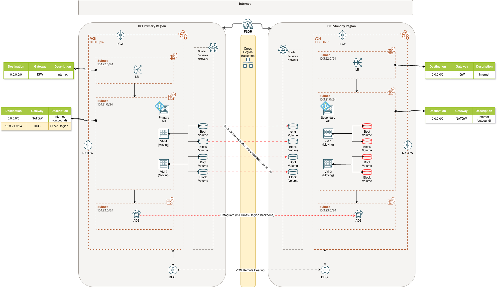
Now that we have the functions we need, we can go ahead and modify the Start Drill and Stop Drill plans.
Below all the steps necessary to add the custom Plan Group to the autogenerated Start Drill. We assume only to remove the DRG route but we could call the function in multiple steps, to remove multiple route rules, inside the same Plan Group and they will be executed in parallel.
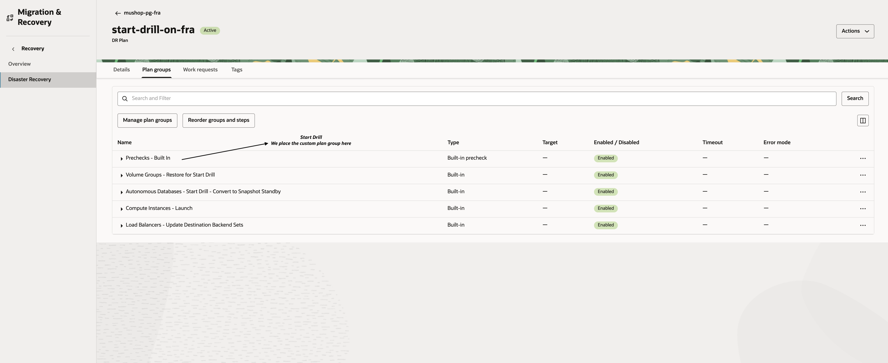
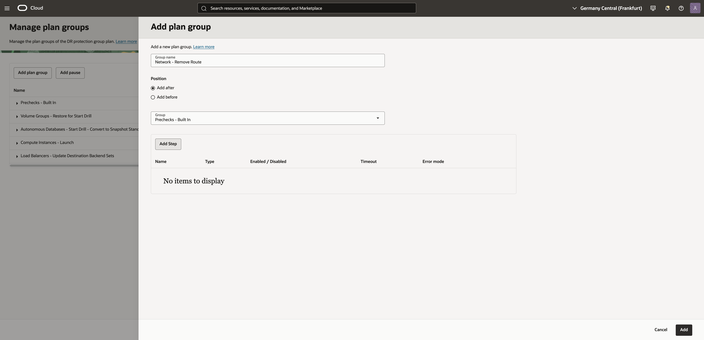
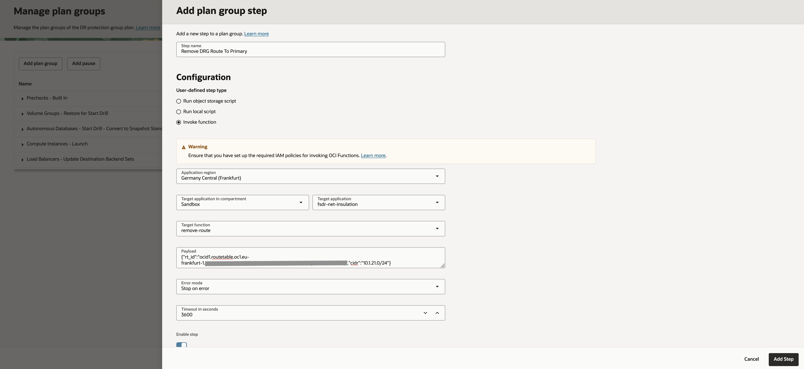
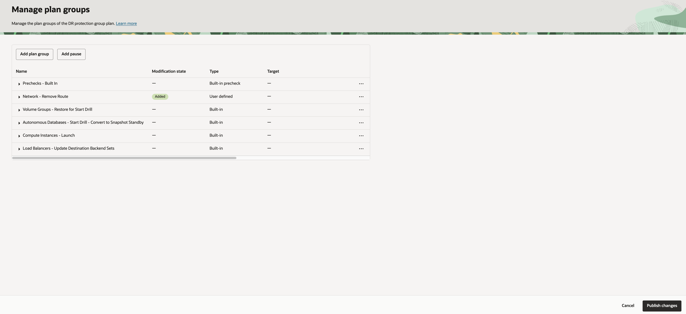
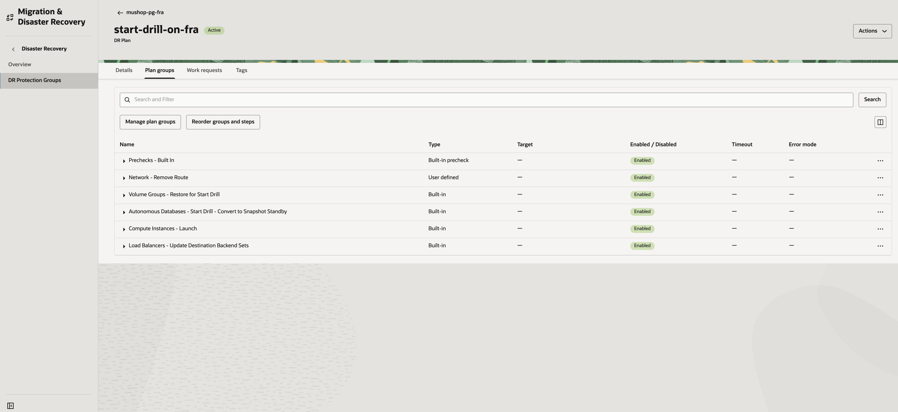
The Start Drill execution summary is the following:
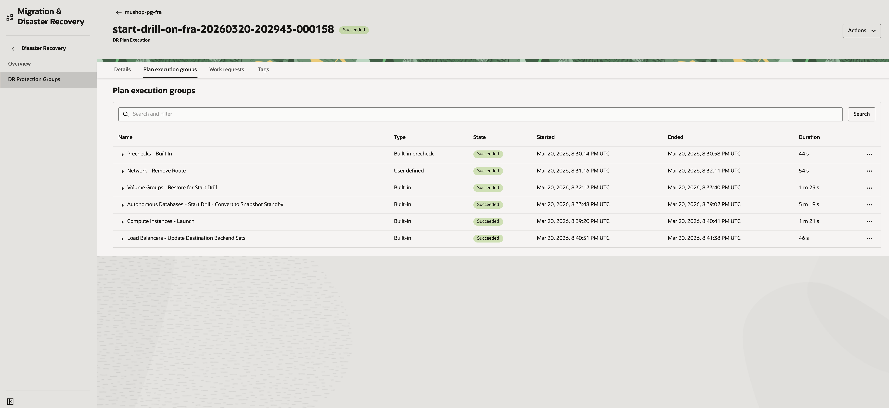
We see that the route is removed from the route table. In fact, the route table before the drill is:
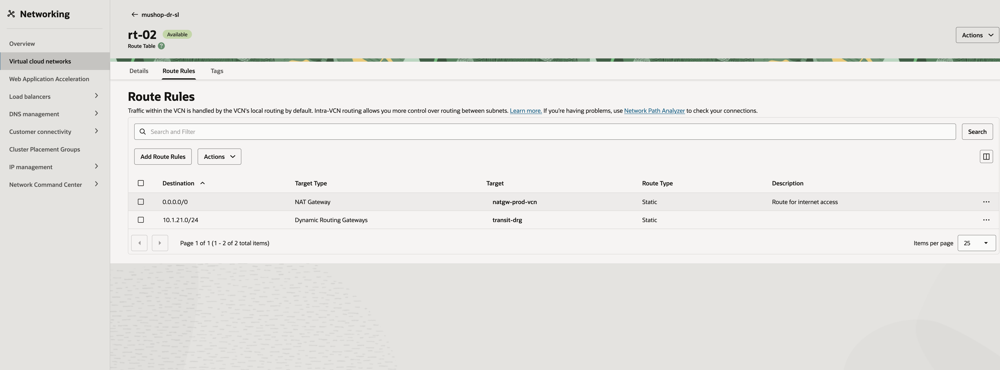
While the route is removed during drill:
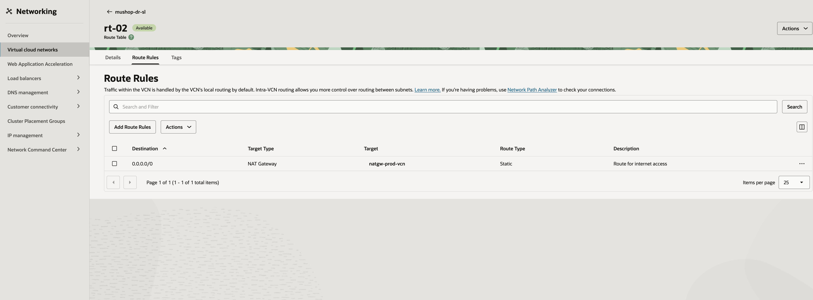
Below all the steps necessary to add the custom Plan Group to the autogenerated Stop Drill.
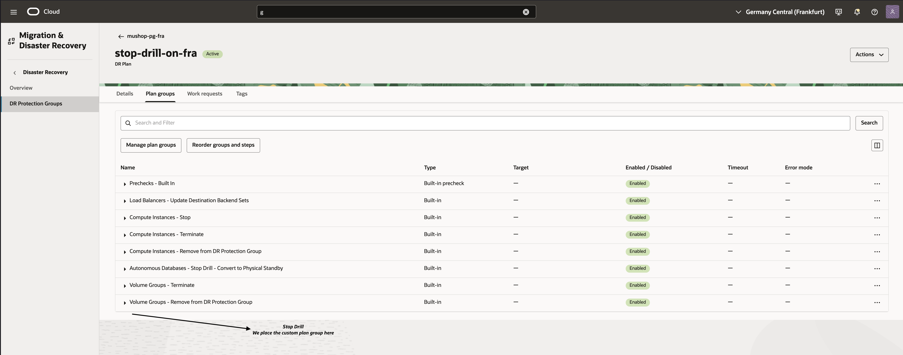
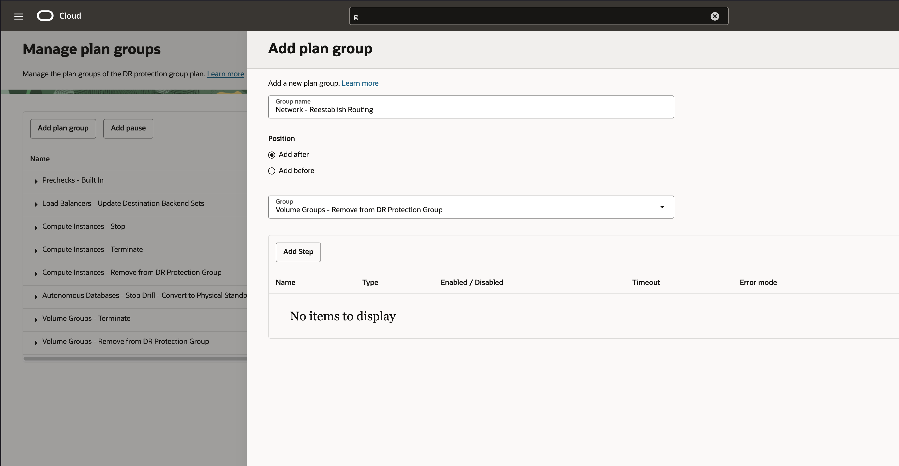
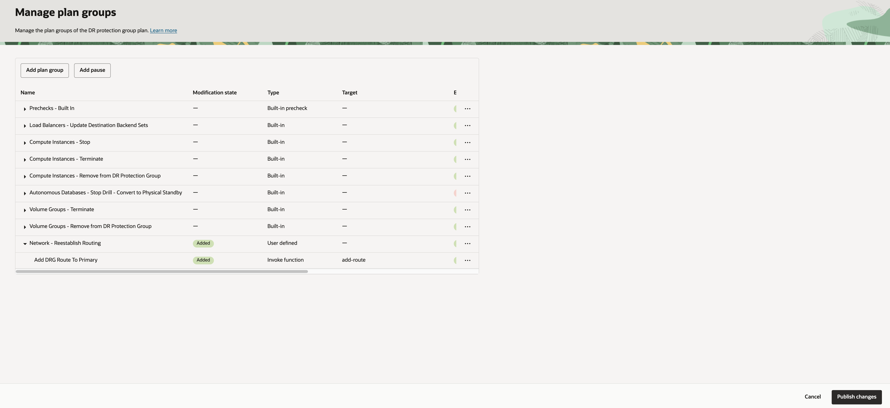
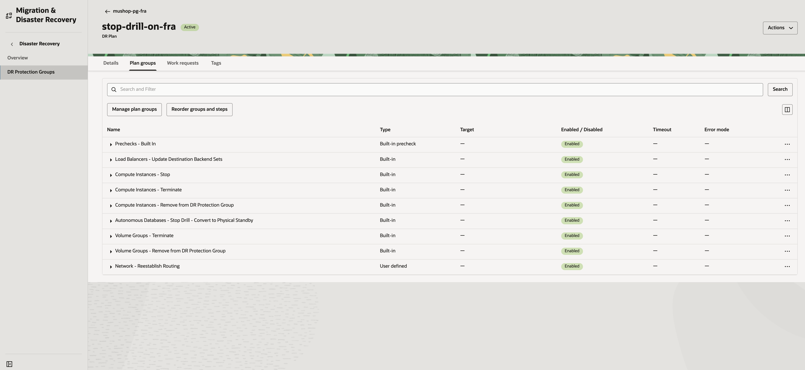
The Stop Drill execution summary is the following:
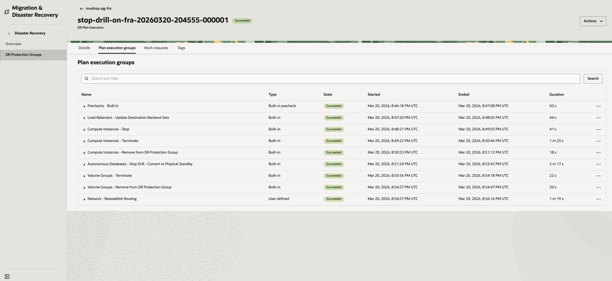
Some useful links.
Copyright (c) 2026 Oracle and/or its affiliates.
Licensed under the Universal Permissive License (UPL), Version 1.0.
See LICENSE for more details.